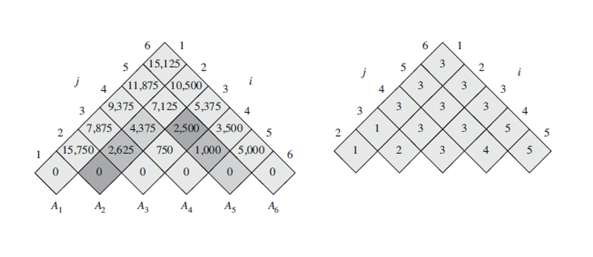

Parantezare optima
de matrice
Enunţ
Se dă un produs matriceal M = M1M2...Mn. Cum înmulţirea matricelor este asociativă, toate parantezările conduc la acelaşi rezultat. Însă, numărul total de înmulţiri scalare ale produsului matriceal poate să difere substanţial în funcţie de ordinea efectuării calculelor, ordine dată de paranteze. Dimensiunile celor n matrice se dau sub forma unui şir d astfel încât perechea (di-1, di) reprezintă dimensiunile matricei Mi.
Cerinţă
Se cere să se minimizeze numărul total de înmulţiri scalare ale produsului matriceal M, valoare ce corespunde unei parantezări optime.
Date de intrare
Fişierul de intrare podm.in conţine pe prima linie un număr natural n, reprezentând numărul matricelor. Pe următoarea linie se găsesc n + 1 numere naturale, reprezentând valorile şirului d.
Date de ieşire
În fişierul de ieşire podm.out se va găsi un singur număr natural egal cu valoarea minimă a numărului total de înmulţiri scalare ale produsului matriceal M.
Exemplu
| podm.in | podm.out |
4
13 5 89 3 34 | 2856 |
Explicaţie
În exemplu se dau 4 matrici: A de dimensiuni (13, 5), B de (5, 89), C de (89, 3), D de (3, 34). În funcţie de ordinea efectuării înmulţirilor matriceale, numărul total de înmulţiri scalare poate să fie foarte diferit:
- (((AB)C)D) : 10582 înmulţiri
- ((AB)(CD)) : 54201 înmulţiri
- ((A(BC))D) : 2856 înmulţiri
- (A((BC)D)) : 4055 înmulţiri
Rezultatul optim se obţine pentru cea de-a treia parantezare: ((A(BC))D).
Este interesant să observăm că nu este indiferent modul de înmulţire a n matrice.
Să considerăm că avem de înmulţit patru matrice : A(10,1), B(1,10), C(10,1), D(1,10).
Să efectuăm produsul în ordinea AxBxCxD.
- A x B = A’ (10 linii, 10 coloane) -> se efectuează 100 de înmulţiri;
- A’ x C = C’ (10 linii, o coloană) -> se efectuează 100 de înmulţiri;
- C’ x D = M (10 linii, 10 coloane) -> se efectuează 100 de înmulţiri;
Dacă acest produs se efectuează în ordine naturală, au loc 300 de înmulţiri.
Să efectuăm acelaşi produs în ordinea în care rezultă din expresia: A x ((B x C) x D).
- B x C = C’ (o linie, o coloană) -> se efectuează 10 înmulţiri;
- C’ x D = D’ (o linie, 10 coloane) -> se efectuează 10 înmulţiri;
- A x D’ = M (10 linii, 10 coloane) -> se efectuează 100 de înmulţiri;
Rezultatul se poate calcula efectuând doar 120 de înmulţiri.
În concluzie, apare o problemă foarte interesantă, şi anume de a afla modul în care trebuie să se înmulţească cele n matrice astfel încât numărul de înmulţiri să fie minim.
Metode de rezolvare
I. Metoda naivă
Se generează toate modurile de a paranteza expresia şi se calculează de fiecare dată numărul de înmulţiri scalare efectuate. Însă numărul de moduri de a scrie un şir cu n paranteze deschise şi n paranteze inchise este C(n) = Cn2n⁄n+1, şirul C(n)(n≥1) se numeşte şirul numerelor lui Catalan. Pentru numere mai mari decat 10, algoritmul este foarte încet, deoarece şirul numerelor lui Catalan creşte exponenţial, de exemplu C(11) = 58786.
II. Metoda programării dinamice
Din fericire, pentru aceasta problemă există o rezolvare polinomială prin utilizarea metodei programării dinamice. Să presupunem că produsul AixA(i+1)x ... Ajx s-a calculat optim. În final s-au înmulţit două matrice de (Aix ... Akx)x(A(k+1)x ... Ajx). Atunci produsele Aix ... Akx si A(k+1)x ... Ajx au fost calculate optim, conform principiului programării dinamice.
Determinarea relaţiei de recurenţă
Conform principiului programării dinamice pentru ca numărul d[i][j] sa fie minim este necesar ca d[i][k] şi d[k+1][j] să fie minime, ∀ i ≤ k < j.
Deducem următoarele relaţii de recurenţă :
- d[i][j] = 0 pentru i = j;
- d[i][j] = a[ i ] * a[ j ] * a[ j+1 ] pentru i + 1 = j;
- d[i][j] = min(i ≤ k < j){d[i][k] + d[k+1][j] + a[i] * a[k+1] * a[j+1]}
Rezolvarea relaţiei de recurenţă
Rezolvarea recursivă a relaţiei de recurenţă de mai sus este ineficientă deoarece subproblemele se suprapun (o abordare recursivă ar conduce la rezolvarea aceleiaşi probleme de mai multe ori). Prin urmare, vom rezolva relaţia de recurenţă în mod bottom – up: determinăm soluţia pentru expresii formate din 3 matrici, apoi 4 matrici, . . ., n matrici. Astfel matricea d se va completa pe diagonale paralele cu diagonala principală.
Pentru matricele (30, 35) (35,15) (15,5) (5,10) (10, 20) (20, 25) se obţin :

Matricea din stânga este matricea d, iar matricea din dreapta este folosită pentru refacerea soluţiei.
Complexitatea algoritmului
Operaţia fundamentală este comparaţia. Observăm că se execută maxim (n-3)*n*n operaţii, astfel complexitatea de timp este O(n3). Din punct de vedere al memoriei folosim un tablou bidimensional de elemente de tip long long(deoarece numărul de înmulţiri scalare poate depăşi 231) şi un tablou unidimensional cu n elemente de tipul int, aşadar complexitatea de memorie este O(n2). Menţionăm că memoria se poate reduce la O(n), deoarece la fiecare pas avem nevoie doar de ultima diagonală, dar aceasta nu face scopul lucrării prezentate.